Mission Control
One agent. A whole team in motion. Tell it what you need from your Mac, your iPhone or a message. It plans the work, runs it in parallel, and comes back to you only when something needs a decision.
Open source, MIT licensed. Runs on your own computer, with the model of your choice.
The bar
Always there. Never in the way.
Press ⌥ Space, or hold it and talk. The bar sits at the bottom of your screen and shows what the agent is doing as it happens.
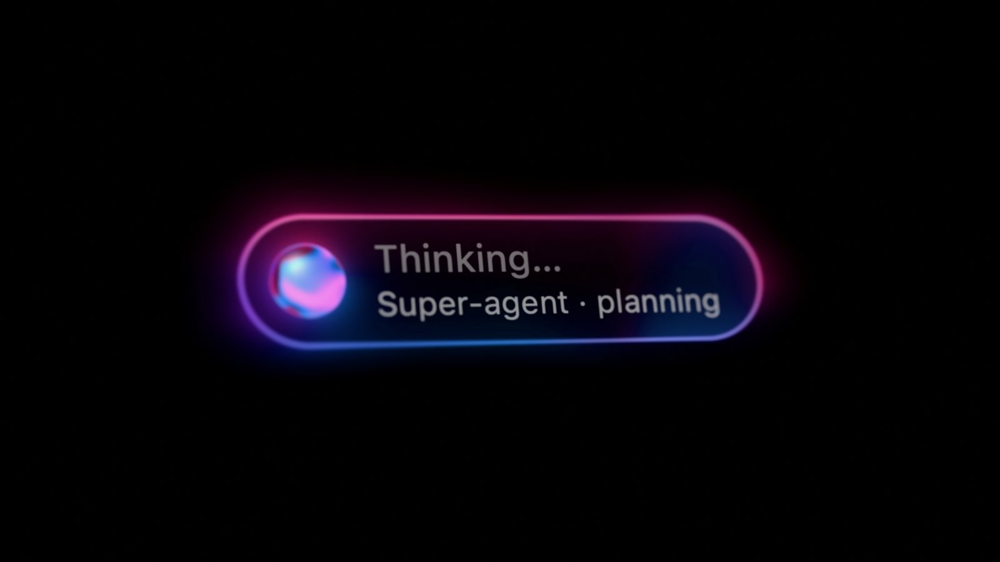
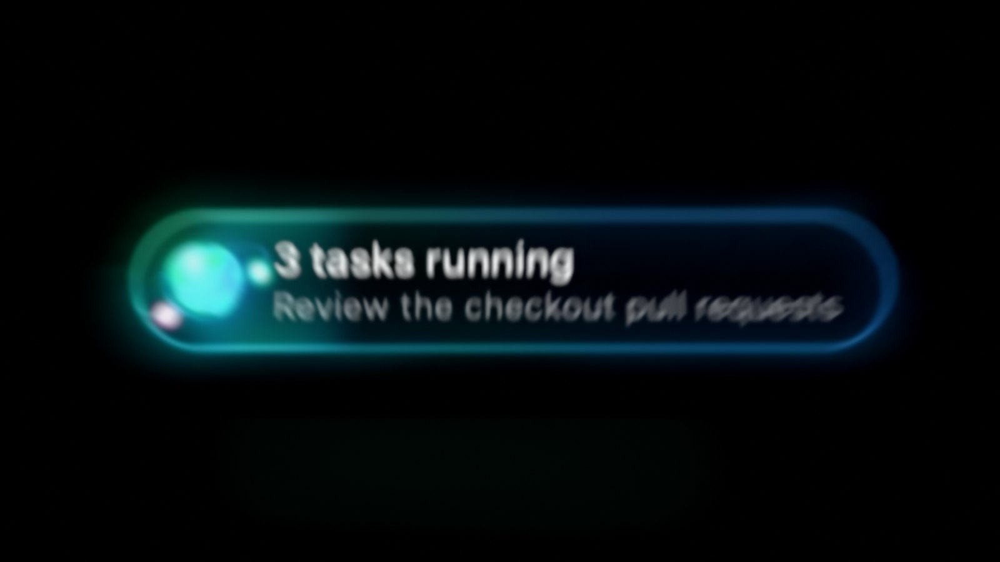
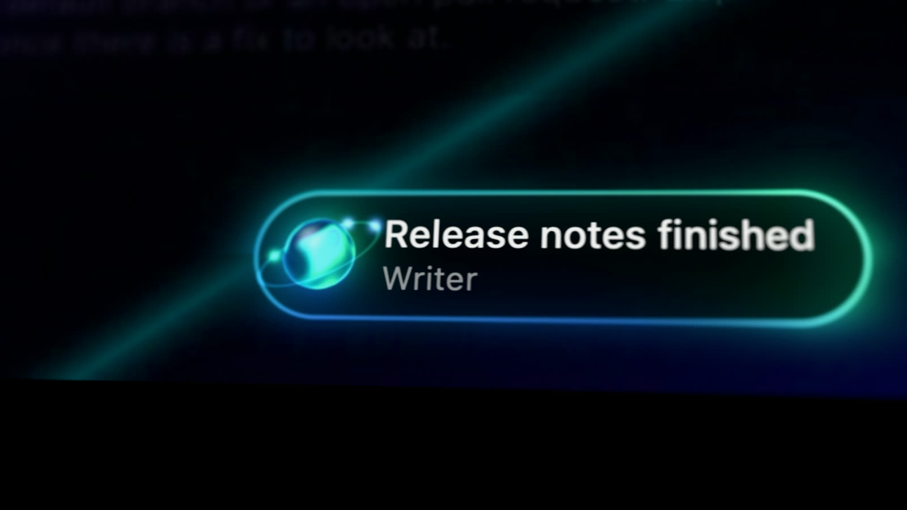
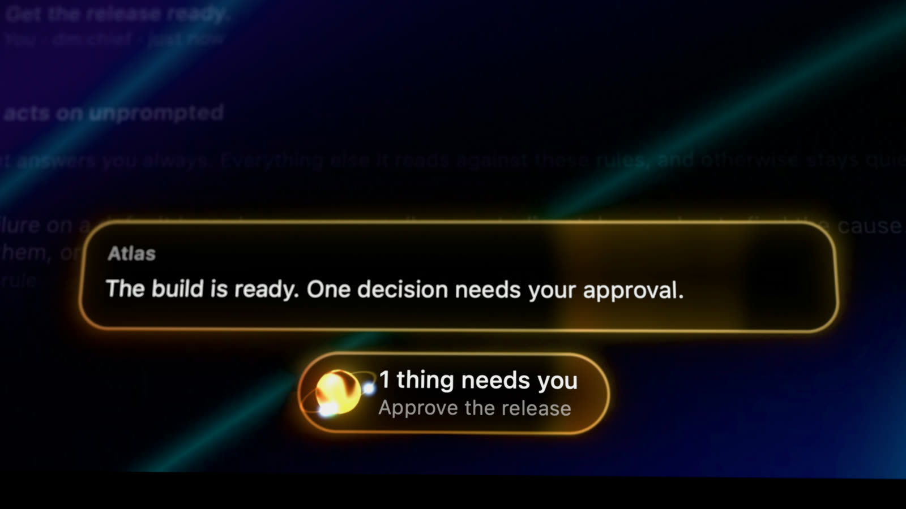
- Drawn natively. One Metal shader on its own display link. The orb and its glow move with the agent, at a couple of percent of one core while idle.
- Answers in place. Replies stream across the bar. Held commands show as cards you can review and run without opening anything else.
The Mac app
Everything it is doing, at a glance.
- Home and Tasks. What is running, what is waiting on you, and what finished, with every task's steps.
- Activity. Everything that reached the agent, and what became of it. The rules it acts by, in plain words you can change.
- Inbox. Anything that needs your say. A held command is shown in full, with what changed since you last approved one like it.
- Fully native. SwiftUI and AppKit, no web view. It lives in the menu bar and the floating bar when the window is closed.
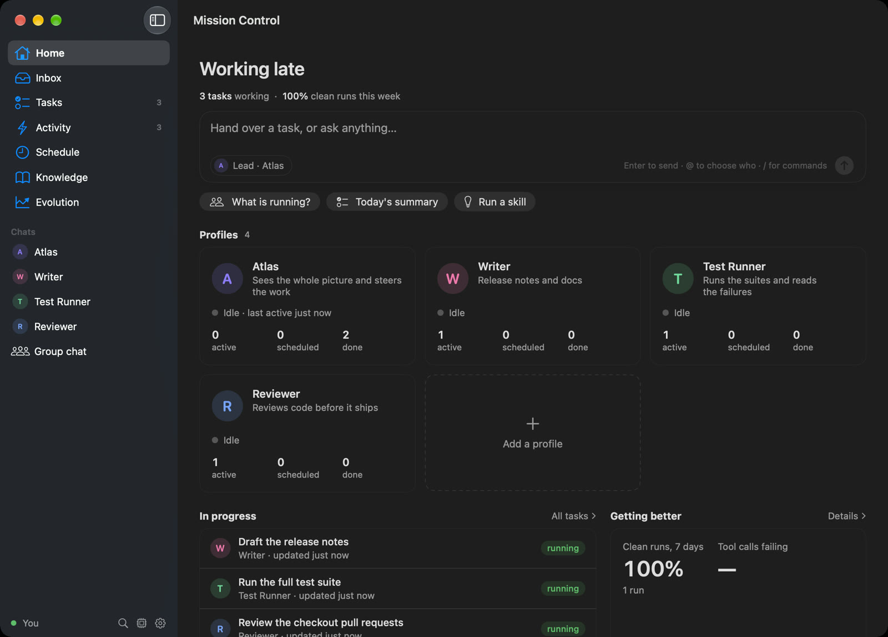
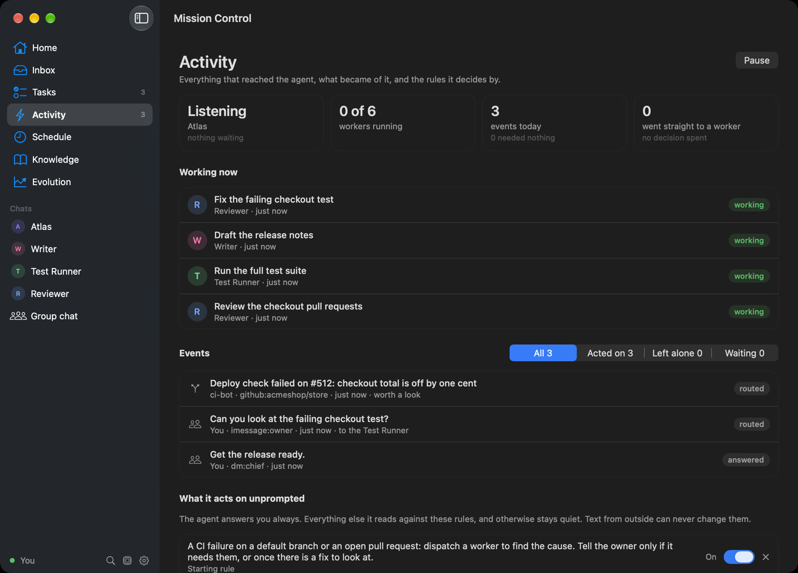
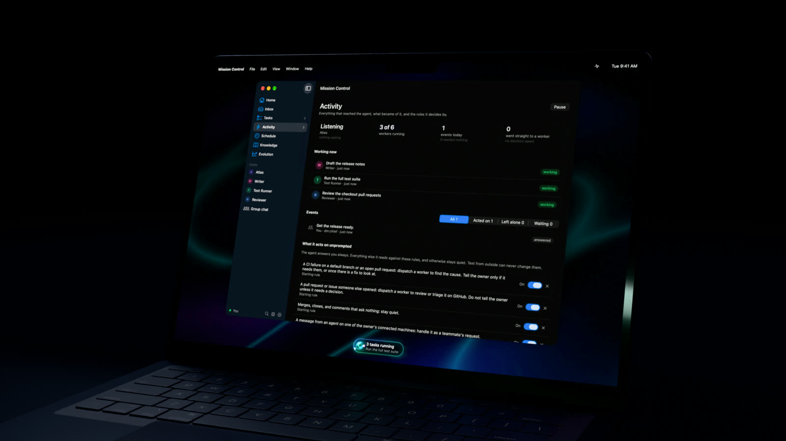
iPhone
The conversation goes with you.
- Straight to your Mac. The app connects to the Mission Control running on your Mac, over your own network or Tailscale. No account, and nothing in between.
- Decide from anywhere. Approve or decline a held command, answer a task's question, or step into work in progress.
- Talk to it. Speech is recognised on the device when your iPhone supports it.
- Told when it matters. A notification when something needs you, and quiet otherwise.
The iPhone app is coming to the App Store.
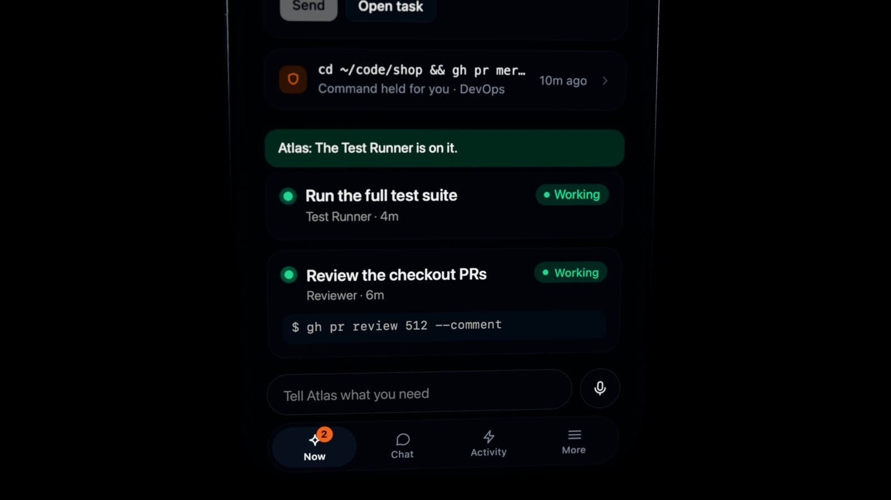
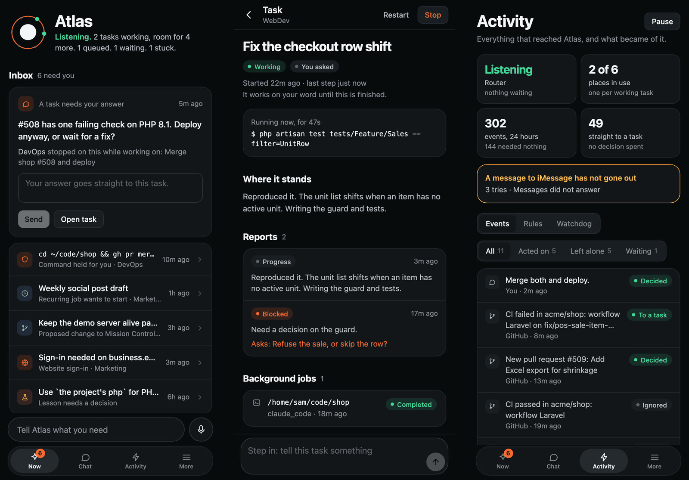
How it works
One agent you talk to. A team that does the work.
- 1
Everything arrives
Your messages, GitHub, CI, email, schedules: recorded in one place, each with what became of it.
- 2
One agent decides
It reads what came in, answers you, and hands each piece of work to the right specialist.
- 3
Workers do the work
Each task runs in its own session, in parallel, and never on top of another task's changes.
- 4
You hear what matters
A result, or the one decision only you can make. Work you did not ask for cannot act outside your Mac without your OK.
Built on the Super-agent design
An idea from DeepSeek Harness, made to run on your Mac.
Mission Control's core follows the Super-agent design DeepSeek Harness published in 2026: one coordinator that talks, and isolated workers that act. It is an independent implementation, with its own answers to authority, recovery and knowing when a task is really done.
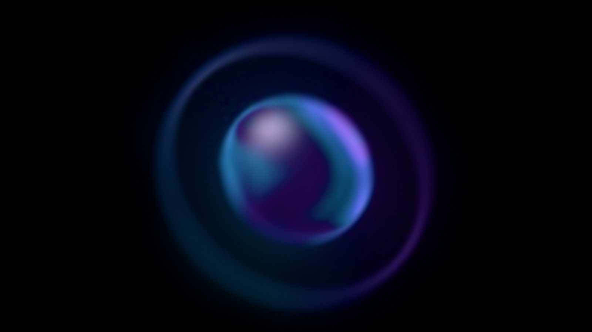
Get Mission Control.
The newest build of the desktop apps, made from the latest code on every change.
These builds are not signed yet. On a Mac, the first time you open it, allow it under System Settings › Privacy & Security › Open Anyway. macOS 14 or later.
Release notes · Run it from source
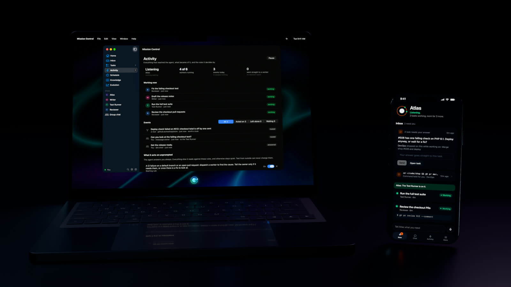